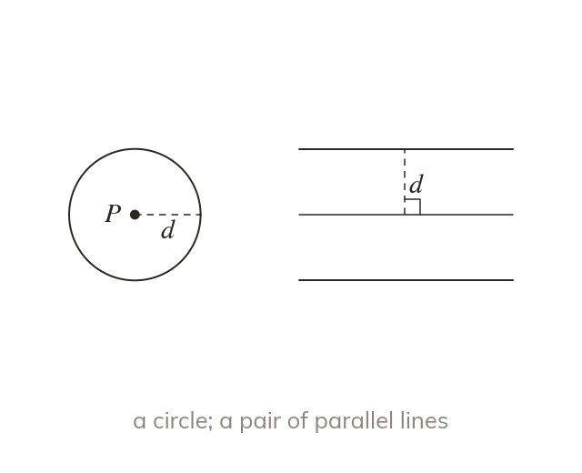

From a point and from a line
A fixed distance d from a point gives a circle of radius d. From a straight line it gives a parallel line d away on each side.
The locus of points a fixed distance d from a point is a circle of radius d. From a straight line it is a pair of parallel lines, one on each side, each d away.